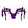
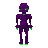
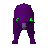
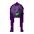

Witches experiment second form

| Config name | shapeshifterspider |
| NPC id | 898 |
| Combat level | 30 |
| Hitpoints | 31 |
| Attack / Strength / Defence | 28 / 20 / 29 |
| Options | Attack |
| Category | witches_experiment |
| Wander range | 5 tiles from spawn |
| Max range | 7 tiles from spawn |
| Defined in | scripts/quests/quest_ball/configs/witches_house.npc |
Witches experiment second form
Looks unnatural.
Drops
Drop script: scripts/quests/quest_ball/scripts/witches_experiement.rs2 (specific handler)
No drops recorded.
Locations
This NPC is not placed on the map by the map files (it may be spawned by scripts, e.g. during quests, or be a variant).
Quests
Related NPCs (category witches_experiment)

Witches experiment
Witches experiment third form
Witches experiment fourth formReferenced in scripts
scripts/quests/quest_ball/scripts/witches_experiement.rs2